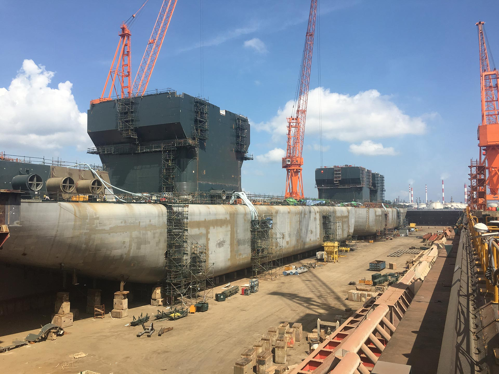

Projecten
Maritiem
Scheepsconversies en zwaar materieel voor werk op zee.
TJ ENTERPRISEQUALITY ENGINEERING · ASSURANCE · CONTROL
Projectcategorie
Maritiem (2)
Bekijk projecten rond offshore schepen en maritieme constructies.
 Maritiem AllseasConversie pijplegschip Audacia
Maritiem AllseasConversie pijplegschip Audacia

Maritiem Heerema Marine ContractorsNieuwbouw kraanschip SleipnirWat deze projecten gemeen hebben
Maritieme projecten gaan over schepen en zwaar materieel dat zelf het werktuig is: kraanschepen, pijplegschepen en vergelijkbare vaartuigen. De constructie moet niet alleen de eigen belasting dragen, maar ook de krachten van het werk dat ermee wordt uitgevoerd.
Bij conversies komt daar een extra beperking bij: de bestaande romp, stabiliteit en systemen bepalen wat er mogelijk is.